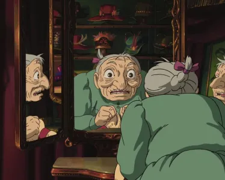

Howl moving castle
Hayao Miyazaki's animated film "Howl's Moving Castle " is based on the novel "Howl's ...
Sophie, heroine of "Le Château Ambulant," teaches us that appearances can be deceiving. Explore this powerful message about the true value that lies beyond stereotypes, at the heart of kindness and authenticity.
Published today at 08:06, modified at 08:13
Image from the film
The line "With age, one learns to become more mischievous" in the context of Le Château Ambulant takes on a humorous aspect thanks to Sophie's self-mockery. Even under the guise of an old lady, she remains an 18-year-old girl in her mind, embodying the profound truth that appearances are often deceiving.
The question of appearances and their deceptive nature is a universally fascinating theme. In modern society, the constant preoccupation with image and physical perfection is more prevalent than ever. Social networks and the media bombard us with images of perfection, encouraging us to judge others and ourselves by superficial criteria.

Image from the film
However, Sophie's message reminds us that age, physical beauty and even social stereotypes are only superficial layers that don't define who we really are. The truth is deeper than what can be seen on the surface. In reality, our experiences, emotions and character forge our true identity. The most beautiful people are often those whose inner selves radiate goodness, empathy and wisdom.
An eloquent example of this philosophy is Sophie's behavior towards Hauru in the film. Regardless of Hauru's condition or changing physical appearance, Sophie never judged her. On the contrary, she always supported and accepted her, recognizing a person's value beyond their transformations. This relationship between the two characters reinforces the message that a person's truth and worth lie far beyond outward appearances.

Image from the film
The need to see beyond appearances is essential to building authentic relationships and appreciating the diversity that makes our world so rich. It also reminds us not to rush to judgment on others, for we cannot know their history, their struggles, and their true nature based solely on what we see outwardly.
In this way, Sophie and her experience in the Château Ambulant offer us a profound reflection on the superficiality of appearances and the richness of inner truth, reinforced by her benevolent attitude towards Hauru. In a world obsessed with image, it's essential to remember that truth lies far beyond the surface, and that each individual is far more complex and precious than they appear.
Hayao Miyazaki's animated film "Howl's Moving Castle " is based on the novel "Howl's ...